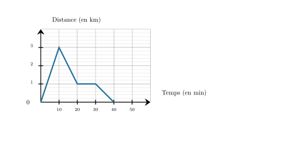

Elsa fait du vélo avec son smartphone sur une voie-verte rectiligne qui part de chez elle. Une application lui permet de voir à quelle distance de chez elle, elle se trouve.
À l'aide de ce graphique, répondre aux questions suivantes :
$\mathbf{a)}$ Que se passe-t-il après 20 minutes de vélo ?
$\mathbf{b)}$ Pendant combien de temps, Elsa, a-t-elle fait réellement du vélo ?
$\mathbf{c)}$ Quelle distance a-t-elle parcourue au total ?

$\mathbf{a)}$ Après 20 minutes de vélo, Elsa fait une pause car la courbe devient horizontale.
$\mathbf{b)}$ Elsa est partie 40 min et a fait une pause de 10 min donc elle a fait réellement du vélo pendant ${\color{#8B3C52}\boldsymbol{30\,\textbf{min}}}$.
$\mathbf{c)}$Le point le plus loin de sa maison est à 3 $\text{km}$ et ensuite elle revient chez elle, donc la distance totale est de ${\color{#8B3C52}\boldsymbol{6\,\textbf{km}}}$.